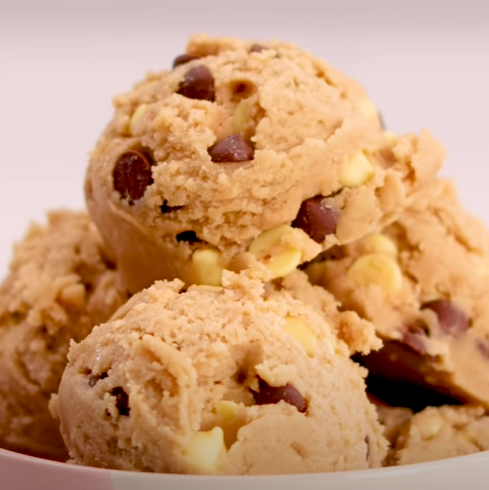

Preparation Information
- Total Time:
- Active Time:
- Feeds:
Ingredients
Edible Cookie Dough
- 1 cup all-purpose flour
- 1/2 cup unsalted dairy free spread
- 2/3 cup caster sugar
- 1/2 tsp salt
- 1 tsp vanilla extract
- 1/4 cup mini semi-sweet chocolate chips (vegan)
- 1 1/2 tbsp plant-based milk
- 1/2 cup vegan sprinkles

Preparation
- Preheat your oven to 350°F. Line a baking tray with baking paper. Add the flour and spread around evenly. Bake for 7 minutes and then take out and allow to cool.
- Add the dairy free spread, sugar and salt to a medium sized mixing bowl and use an electric hand mixer to mix until fluffy and pale. About 3 minutes. Add the milk and vanilla and continue mixing until well combined.
- Add the cooled down flour and mix using a spatula until well combined. Then add the chocolate chips and sprinkles and fold in.
- Roll out into 10 balls and serve.